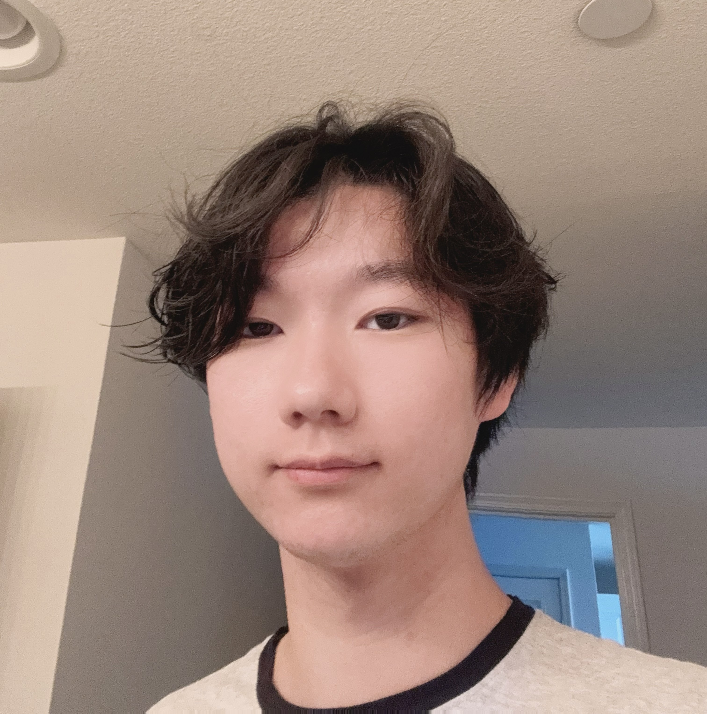

Design & architecture
- Digital IC design
- Verilog / SystemVerilog
- RTL development
- AI/ML accelerators
- Pipelined datapaths
- Clock domain crossing
A LITTLE ABOUT ME
I'm Nick, an M.S. Electrical Engineering student at UC San Diego and a graduate researcher in the VVIP Lab.
I focus on digital IC design, physical design, and AI/ML accelerators. I enjoy the process of taking an idea apart, understanding how it works, and building it back into something that can be implemented and evaluated.

01 / TOOLKIT
02 / EXPERIENCE & EDUCATION
VVIP Lab, UC San Diego
Advised by Professor Mingu Kang and working with Ph.D. student Yun-Chia Yu on AI/ML accelerator architecture and VLSI implementation. Contributing to digital hardware design, RTL development and verification, and physical design.
Current research focuses on implementing and evaluating hardware accelerator architectures: translating concepts from research literature into RTL and carrying designs through synthesis and physical implementation for hardware evaluation.
UC San Diego
Pursuing advanced studies in electrical engineering with focus on integrated circuits and systems design. Building upon undergraduate foundation with specialized coursework and research opportunities.
UC San Diego, JSOE
Serve as the Electrical Engineering subject matter expert for an AI-powered ECE 100 tutor, translating course content into system requirements and evaluating AI-generated explanations for technical accuracy. Collaborate with Electrical Engineering faculty and Computer Science developers to identify knowledge gaps, define quality standards, and guide iterative improvements to the tutoring platform.
UC San Diego
Teaching Assistant for ECE 100: Linear Electronic Systems: a course covering frequency response, Laplace transforms, op-amp filter design and stability, and feedback loops through integrated lecture and lab. Host two 3-hour lab sections weekly with integrated office hours, guiding students through analysis, simulation, and hands-on testing of linear circuits and systems. Responsible for grading lab reports, midterms, and finals, proctoring exams, and supporting the professor with course logistics.
UC San Diego
Comprehensive undergraduate program covering circuit analysis, digital systems, signal processing, and electronics. Developed strong foundation in both theoretical concepts and practical applications through hands-on laboratory work and projects.
Professor Saharnaz, UCSD
Developed an educational game demonstrating and teaching concepts in optics and circuits. Created an immersive learning experience that combines hardware design with interactive storytelling, helping students understand complex engineering principles through hands-on experimentation.
Babel Industries Corp.
Supervised the development of multiple technical projects while directly contributing to implementation. Led cross-functional teams, managed project timelines, and ensured technical deliverables met quality standards and client requirements.
Professor Saharnaz, UCSD
Contributing to the development of a remote-controlled lab environment for optics and circuitry experiments. Working on creating accessible, hands-on learning experiences that allow students to conduct real experiments remotely through web-based interfaces.
Mentor Collective
Provided guidance and support to 2 new transfer students, helping them navigate academic challenges and integrate into the university community. Focused on academic planning, resource identification, and personal development strategies.
Professor Saharnaz, UCSD
Utilized ESP32 microcontroller for various game designs, connecting to Wi-Fi and enabling data interactions on LCDs with Google Sheets through Apps Script. Gained experience in IoT development, web APIs, and embedded systems programming.
KEEP THE CONVERSATION GOING
Let's connect. ↗